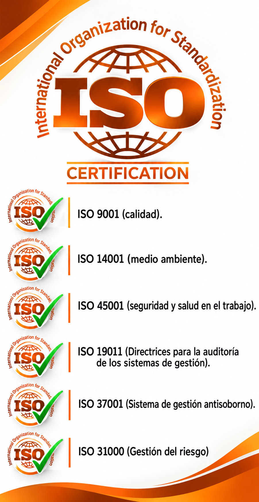

Gestión de la Calidad
Orientada a fortalecer la calidad de los procesos, productos y servicios, así como la satisfacción del cliente.
Implementación de sistemas basados en normas ISO para fortalecer la calidad, seguridad, sostenibilidad y desempeño organizacional.

Las normas ISO son estándares de reconocimiento internacional que permiten a las organizaciones establecer criterios estructurados para la gestión de sus procesos.
En SOS4 SERVICES apoyamos a las organizaciones en la implementación de Sistemas de Gestión Integral adaptados a sus necesidades y actividades.
El objetivo es fortalecer la eficiencia operativa, el cumplimiento normativo y la mejora continua en todas las áreas de la organización.
Integramos diferentes estándares de gestión de acuerdo con los objetivos, riesgos y necesidades de cada organización.
Orientada a fortalecer la calidad de los procesos, productos y servicios, así como la satisfacción del cliente.
Permite establecer controles para gestionar aspectos ambientales y mejorar el desempeño ambiental de la organización.
Orientada a controlar riesgos laborales, prevenir lesiones y mejorar las condiciones de seguridad y salud en el trabajo.
Proporciona directrices para la planificación, realización y gestión de auditorías de sistemas.
Sistema orientado a establecer controles para prevenir, detectar y gestionar riesgos relacionados con el soborno.
Proporciona principios y directrices para identificar, evaluar y gestionar riesgos dentro de la organización.
Un proceso estructurado para integrar el sistema de gestión a las operaciones reales de la organización.
Evaluación inicial de procesos, documentación, riesgos y cumplimiento existente.
Definición de objetivos, responsabilidades, controles y acciones necesarias.
Desarrollo de procedimientos, controles, capacitación y documentación del sistema.
Evaluación del desempeño, auditoría y establecimiento de acciones de mejora continua.
Los sistemas de gestión permiten integrar procesos, responsabilidades y objetivos dentro de una estructura organizada, promoviendo el liderazgo, la planificación, la evaluación del desempeño y la mejora continua.
La integración de sistemas de gestión permite establecer procesos más sólidos, medibles y orientados a resultados.
Procesos organizados, responsabilidades definidas y mejores controles operativos.
Mayor control sobre requisitos normativos, internos y contractuales.
Evaluación constante para identificar oportunidades y fortalecer el desempeño.
Identificación y control de riesgos que pueden afectar los objetivos de la organización.
Podemos ayudarte a estructurar e integrar un sistema de gestión de acuerdo con las necesidades y objetivos de tu organización.